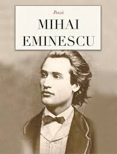

Poezii is a masterpiece of Romanian literature, showcasing the profound works of Mihai Eminescu, one of the greatest poets of the 19th century. This collection contains some of his most celebrated poems, blending romantic idealism with philosophical depth. Eminescu's verses explore themes of love, nature, destiny, and the human condition, creating a rich tapestry of emotional and intellectual expression.
Among the notable works in this collection is Luceafărul (The Morning Star), an epic poem that stands as one of Eminescu's most ambitious creations. This poem exemplifies his ability to weave together mythology, philosophy, and personal longing. Other significant works explore the beauty of nature, the pain of loss, and the eternal search for meaning in human existence.
Share your thoughts on Eminescu's poems. What passages resonate with you? How do his themes connect to your own experience?